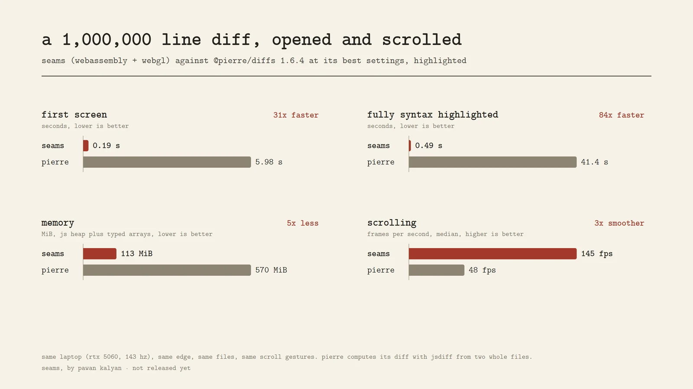

the diff github won't show
lockfiles, generated code, snapshots, vendored dependencies, migrations. "large diffs are not rendered" is where seams starts.
a diff viewer for files too big for everything else.
a million-line diff opens in a fifth of a second and scrolls at your screen's refresh rate. the diff engine is hand-written assembly, ported to hand-written webassembly; the view is drawn with webgl.
this is seams itself, rendering a real change to its own source. scroll it, press n for the next change, v for split view, ctrl f to find. drag to select, copy works.
loading…
your files never leave this tab: they are read, diffed and drawn on your machine.
one laptop, one browser, the same files and the same scroll gestures, against @pierre/diffs 1.6.4 at its best settings with highlighting on.

fair caveats: pierre computes its diff with jsdiff from two whole files, which is most of its first-screen time; its grammars are richer than seams' lexers; it has comments, annotations and a merge ui that seams does not. the scrolling gap holds either way.
most diffs are small, and any viewer is fine for those. seams is for the ones that break the others.
lockfiles, generated code, snapshots, vendored dependencies, migrations. "large diffs are not rendered" is where seams starts.
coding agents change thousands of lines at once. you still have to read them, and the review tool should not be the slow part.
sql dumps, json exports, csv, logs, terraform state. text files with a million lines are normal outside of source trees.
seams-pack diffs on the server and writes a pack; the browser opens it with nothing left to compute. a pr page that is instant on any laptop.
a small npm package with a plain api and a react component: code review apps, editors, internal dashboards, docs.
the cli writes patches that carry their own bytes and refuse the wrong base, and does three-way merges with conflict markers.
two files go in as bytes. nothing is turned into strings, nothing becomes a dom node.
the native engine is nasm x86-64; the browser engine is the same pipeline in hand-written webassembly. both produce identical edit scripts, checked on hundreds of thousands of random pairs.
three ways in. none of them phone home.
import { createDiffViewer } from
'https://cintu07.github.io/seams/lib/index.mjs';
const viewer = createDiffViewer(el, { theme: 'sage' });
await viewer.setFiles(before, after, { name: 'main.ts' });no install, no package manager. it's about 100 kb of plain modules and a 5 kb wasm file. want it on your own server? grab seams-web.tar.gz from the releases and serve the folder.
# linux x86-64, one static binary from the releases
tar xf seams-linux-x86_64.tar.gz
seams old new # unified diff
seams patch old new > p.seams
seams apply old p.seams > new
seams merge base ours theirsor build it yourself with make (nasm and gcc). as a git diff driver, GIT_EXTERNAL_DIFF=tools/seams-git git diff.
node tools/seams-pack.mjs old new -o pr.seamspack
viewer.setPack('/pr.seamspack')diff in ci or on your server, serve the pack compressed, open it with no diffing in the browser.